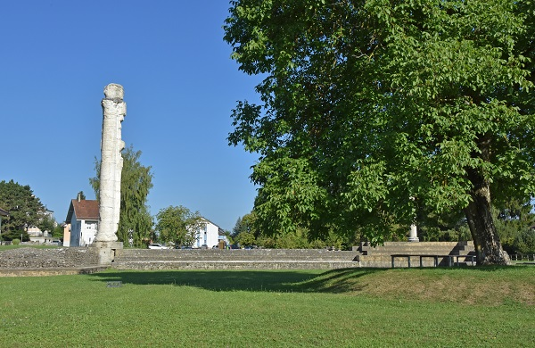
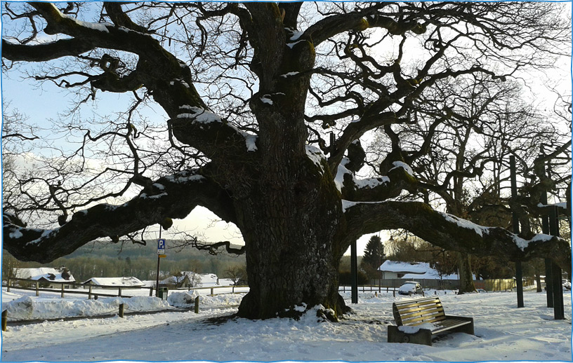
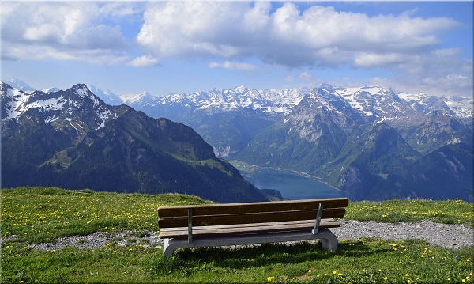

Quelques astuces banc’aires pour vous
Secrets banc’aires royaux
Avenches - Le buste en or de l’empereur Marc-Aurèle témoigne d’une attention particulière de l’empereur romain pour Avenches. Partout, des bancs vous invitent à laisser passer devant vos yeux le passé glorieux de l’ancienne capitale helvétique. L’amphithéâtre (romain) va bientôt vous présenter de nouveaux bancs.
Secrets banc’aires offrant une belle vue
Une belle vue sans prendre de l’altitude ? Le Gros-de-Vaud bénéficie de sa situation centrale. Il recèle bien plus d’un secret banc’aire dont le Jura, le Jorat, les Préalpes et même le Mont Blanc peuvent témoigner ;-) !
Il secret banc'ar cun ils pli blers clics
Ici sera bientôt présenté le banc avec le plus de visiteurs virtuels et réels de la semaine. Laissez-vous inspirer !
En attendant, savourez un secret banc’aire original : dressé sur le Fronalpstock dans le canton Schwyz, ce banc vous offre une vue exceptionnelle, captée pour vous par notre ambassadeur banc’aire, Hans-Peter Bruder.
Noss pli giuven secret banc'ar
Bienvenue à nos plus jeunes ! Ici vous trouverez bientôt le plus récent secret banc’aire ajouté à la carte banc’aire.
En attendant cette fonctionnalité nous vous invitons à une petite excursion virtuelle en traversant le Roestigraben: les bancs du Wollerau façonnent quasiment un tapis rouge qui vous offrira une vue impressionnante sur le lac de Zurich.
-kl.jpg)
Qua chattais Vus l'impressum !
Pictogramme d’Isabelle Keyeux et Katharina Peter
Photo principale : banc d’Engelberg, de H.P.Bruder